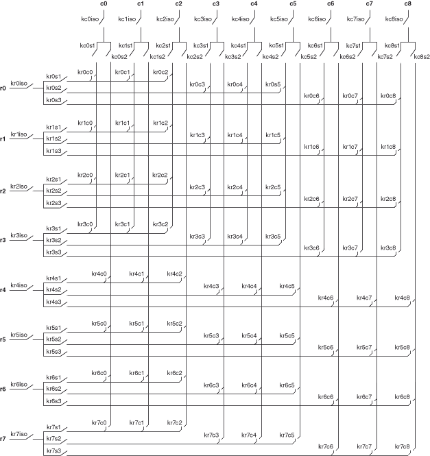

The following figure represents the NI PXI/PXIe-2540 in the 1-wire 8×9 matrix topology.

Both the scanning command, r2->c1;, and the immediate operation, niSwitch Connect Channels VI or the niSwitch_Connect function with parameters r2 and c1, result in the following connection:
signal connected to R2 is routed to C1